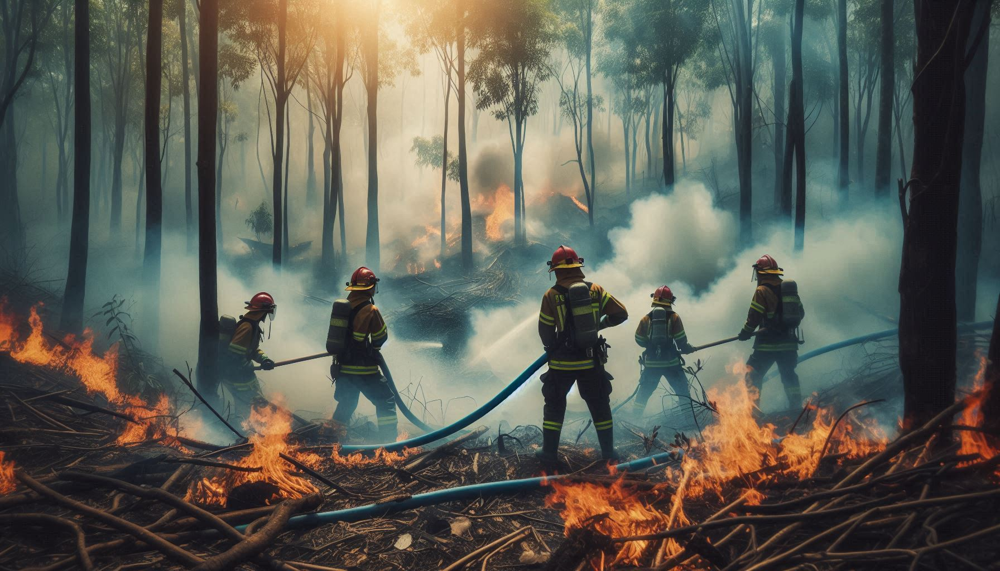

Desastres Naturales

Revisa los ultimos desastres naturales en España en nuestra página web, no olvides en publicar los desastres naturales que hayas visto recientemente en nuestro formulario.
Estadisticas
| Año | Desastres Naturales | ||
|---|---|---|---|
| Terremotos | Incendios | Inundaciones | |
| 2020 | 1100 | 8700 | 60 |
| 2021 | 1000 | 9200 | 50 |
| 2022 | 1200 | 9000 | 40 |
| 2023 | 1100 | 8500 | 50 |
| Datos aproximados de la península ibérica | |||
Desastres más frecuentes
-
Inundaciones
- Son más frecuentes en Murcia y Valencia
-
Incendios
- Son más frecuentes en Galicia y Andalucía
-
Terremotos
- Son más frecuentes en Granada y Almería
-
Huracanes
- Son más frecuentes en Canarias